中国史⑥（モンゴル世界帝国と元）
ポイント総復習
13世紀、ユーラシア大陸にまたがる空前の巨大帝国が築き上げられました。モンゴル帝国の征服活動により、東西の世界が一つに結びつき、人やモノ、文化が活発に行き交う「世界の一体化」が進展しました。
1. モンゴル帝国の成立と征服活動
騎馬遊牧民の機動力を活かし、モンゴルはまたたく間にユーラシア大陸の大部分を征服しました。
1206年〜：チンギス＝カン（太祖）の時代
モンゴル高原の遊牧民を統一したテムジンが、有力者の集会（クリルタイ）でカンに推戴され、大モンゴル国を建国しました。
- 千戸制：遊牧民を軍事・行政組織として編成し、強力な騎馬軍団を作り上げました。
- 征服活動：中央アジアのナイマン、トルコ系イスラーム国家のホラズム・シャー朝を征服し、さらに中国北西部の西夏を滅ぼしました。
第2代：オゴデイ（太宗）の時代
- 首都建設と中国進出：モンゴル高原に首都カラコルムを建設し、華北の金を滅ぼしました（1234年）。
- ヨーロッパ遠征：甥のバトゥを司令官としてヨーロッパへ派遣し、1241年のワールシュタットの戦いでドイツ・ポーランド諸侯連合軍を撃破しました。
第4代：モンケ（憲宗）の時代
- 弟のクビライが大理（雲南）と吐蕃（チベット）を征服。
- もう一人の弟フレグが西アジアに遠征し、1258年にバグダードを占領してアッバース朝を滅ぼしました。
第5代：クビライ（世祖）の時代
- 遷都と国号変更：首都を大都（現在の北京）に移し、1271年に国号を「元」と定めました。
- 中国統一：1279年に南宋を滅ぼし、中国全土の支配を完成させました。周辺のミャンマー（パガン朝）なども服属させます。
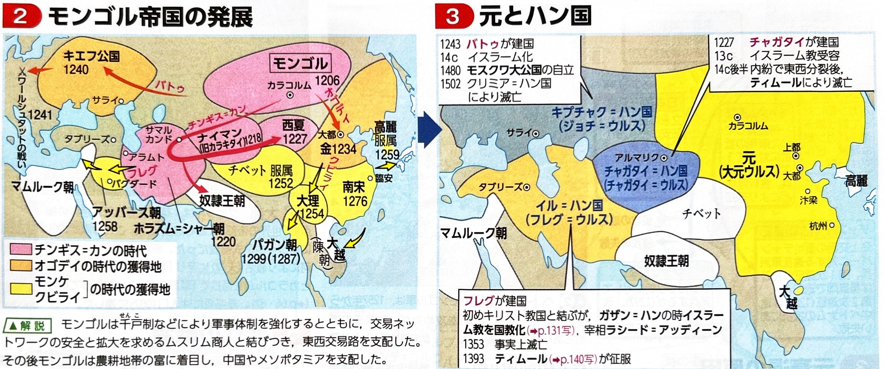
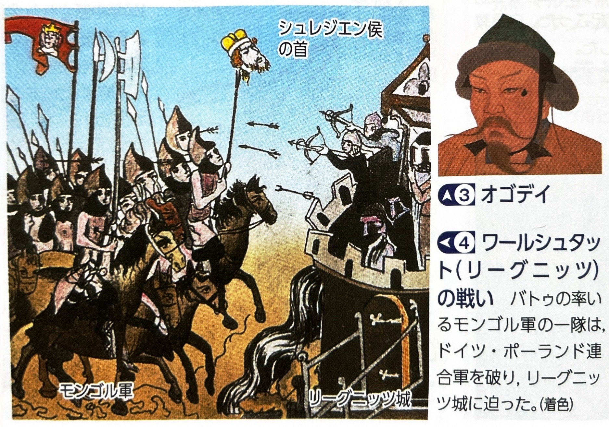
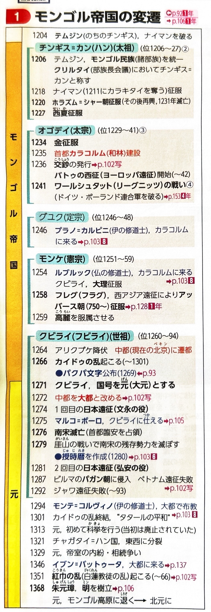
2. 諸ハン国の成立と元の中国統治
広大になりすぎた帝国は、やがていくつかの「ハン国」に分かれて事実上の緩やかな連合体（分裂状態）となります。
| ハン国 | 建国者と位置・特徴 |
|---|---|
| チャガタイ＝ハン国 | 中央アジアに建国。のちに東西に分裂します。 |
| キプチャク＝ハン国 | バトゥが南ロシアに建国（都：サライ）。ロシアを長期間支配し（タタールのくびき）、のちにモスクワ大公国が独立するまで存続しました。 |
| イル＝ハン国 | フレグがイラン地方に建国（都：タブリーズ）。第7代ガザン＝ハンのときにイスラーム教を国教化し、元朝と友好関係を結びました。 |
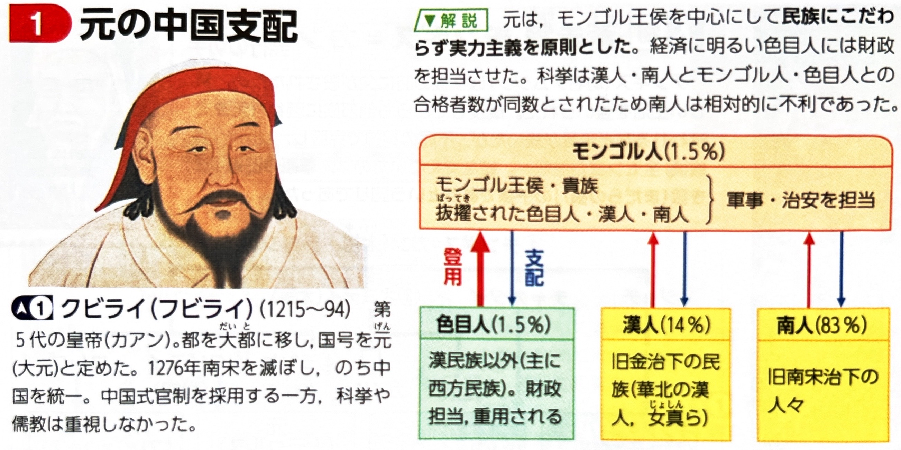
元の身分制度（モンゴル人至上主義）
元は少数派のモンゴル人が多数派の中国人を支配するため、厳格な身分制度を敷きました。
- モンゴル人：特権階級として軍事や政治の要職を独占。
- 色目人（しきもくじん）：中央アジア・西アジア出身のイスラム教徒など。財務官僚として重用され、モンゴル人をサポートしました。
- 漢人：旧金（華北）の支配下にいた人々。
- 南人：旧南宋（江南）の支配下にいた人々。最下層に置かれ、冷遇されました。このため、科挙も一時的に中止され、江南の士大夫層は不満を募らせました。
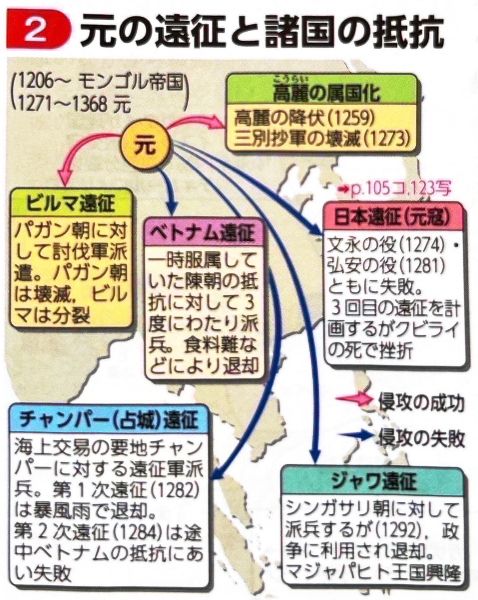
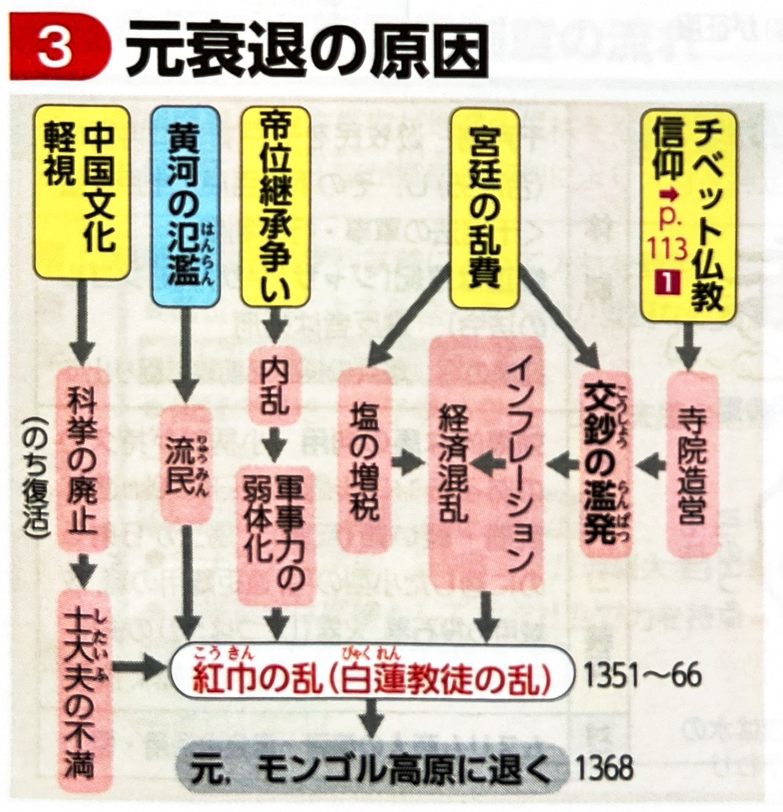
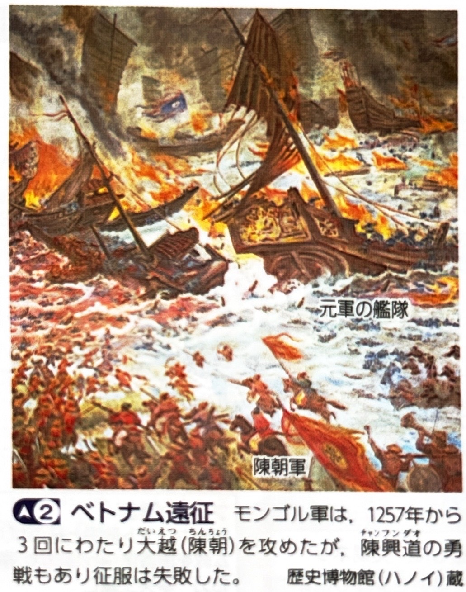
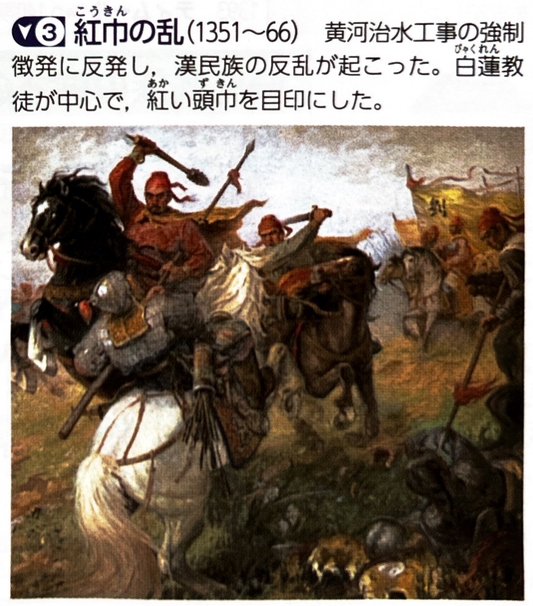
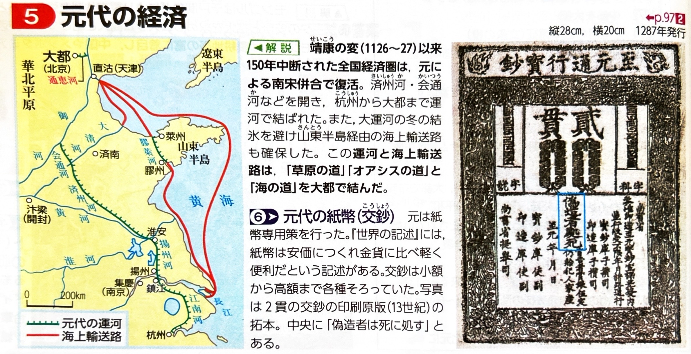
3. ユーラシア広域ネットワークと東西交流
モンゴル帝国の平和（タタールの平和）により、陸と海の交通網が整備され、東西の文化や人が活発に行き交いました。
- 交通・経済網：陸路にはジャムチ（駅伝制）が整備され、通行証（牌符）で安全が保障されました。海路も発展し、大都は大運河と海運によって江南や泉州・広州などの国際貿易港と結ばれました。また、全域で交鈔（こうしょう）という紙幣が広く流通しました。
- 文化の融合：
- 宗教・文字：チベット仏教の僧パスパが国師に迎えられ、モンゴル語表記のためのパスパ文字が制定されました。
- 科学：イスラーム天文学の影響を受け、郭守敬（かくしゅけい）が精度の高い『授時暦』を作成しました（のちの日本の貞享暦にも影響）。
- 庶民文化：元曲と呼ばれる戯曲（『西廂記』など）や、『水滸伝』『三国志演義』の原型となる小説が発達しました。
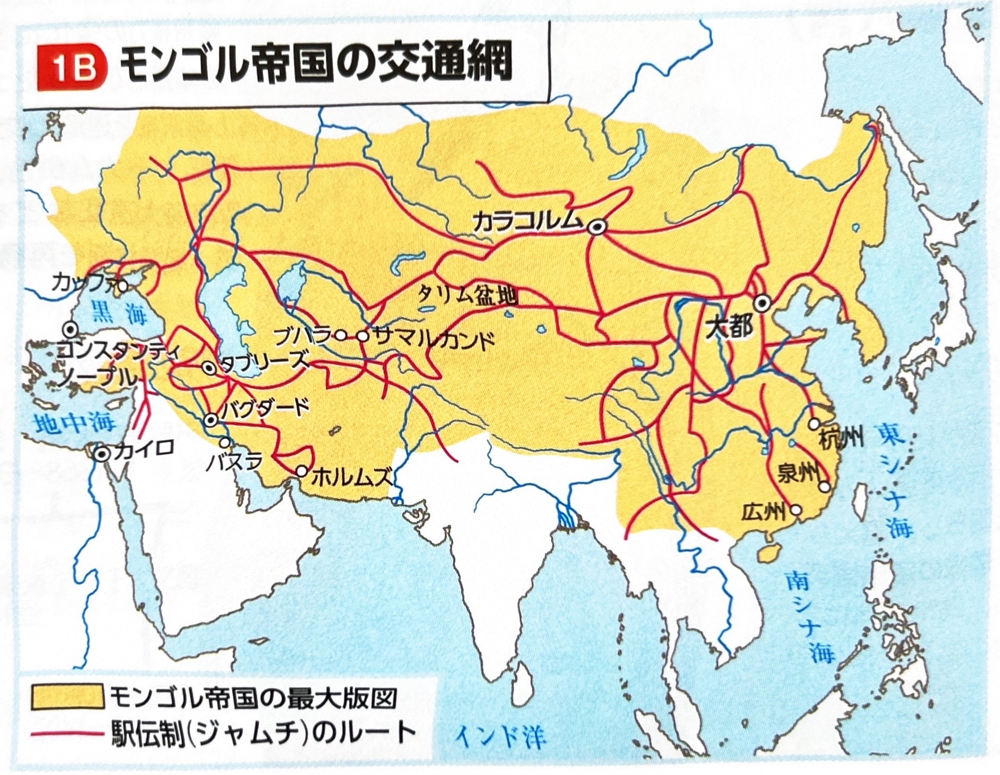
東西交流の主な人物
| 人物（出身・所属） | 業績・特徴 |
|---|---|
| プラノ＝カルピニ（伊） ルブルック（仏） |
それぞれローマ教皇、フランス王の使節として、イスラーム勢力を挟み撃ちにするための同盟を求めて、モンゴルの都カラコルムを訪れました。 |
| マルコ＝ポーロ（伊） | ヴェネツィアの商人。陸路で大都を訪れ、フビライに仕えました。帰国後に口述された『世界の記述（東方見聞録）』は、ヨーロッパ人の東洋への関心を高めました。 |
| モンテ＝コルヴィノ（伊） | 大都を訪れ、中国で初めてカトリックの布教を行いました。 |
| イブン＝バットゥータ （モロッコ） |
イスラム教徒の大旅行家。海路で泉州から大都を訪れ、『大旅行記（三大陸周遊記）』を著しました。 |
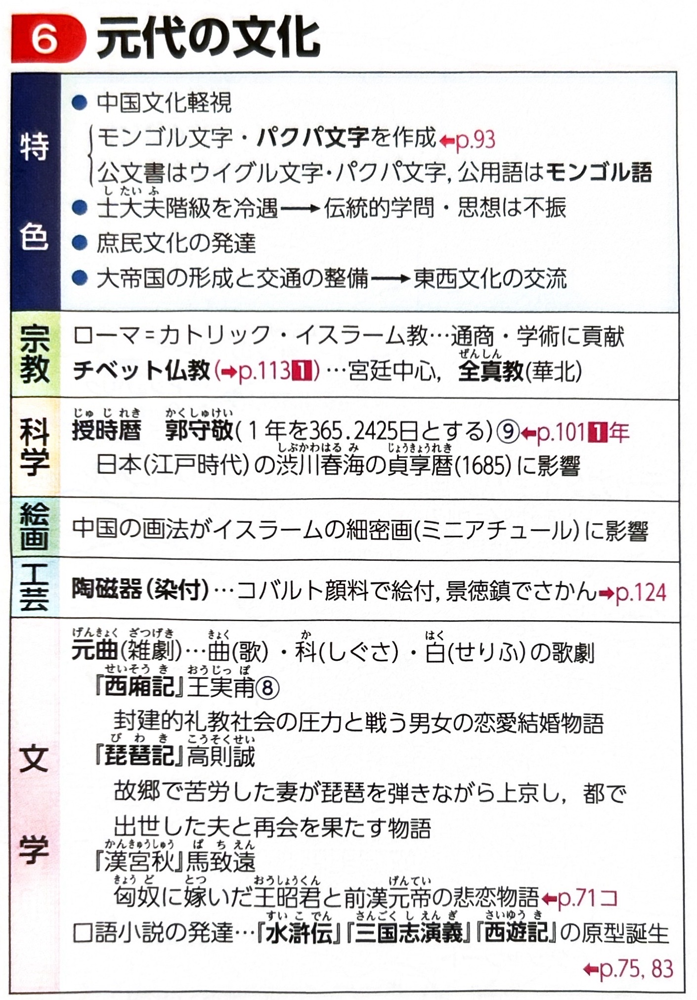
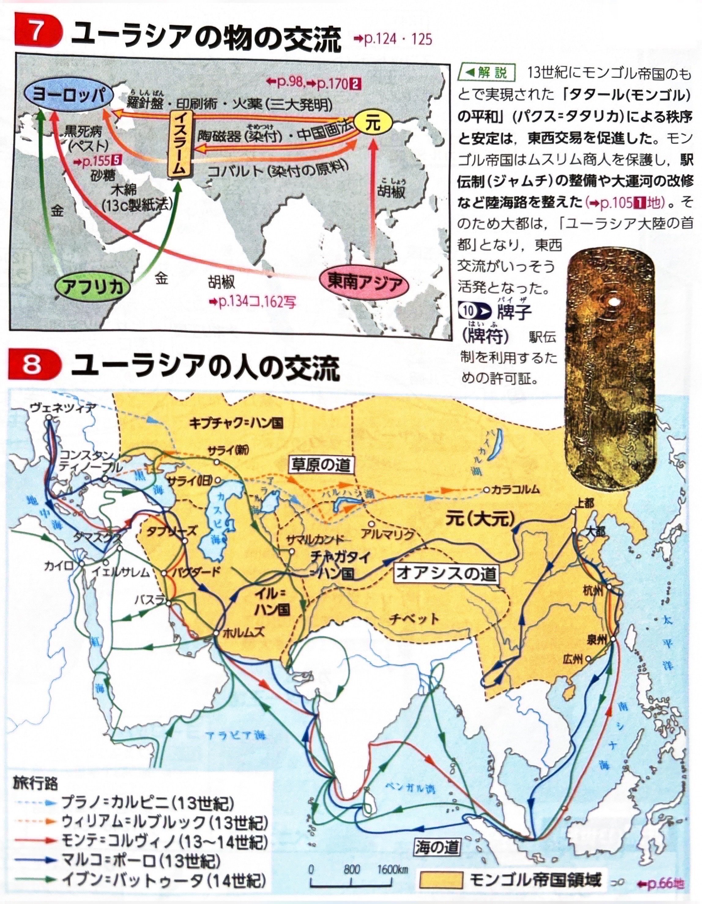
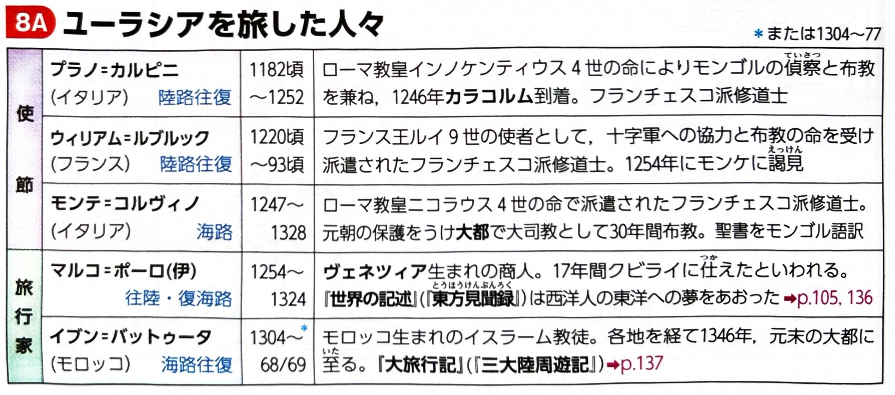
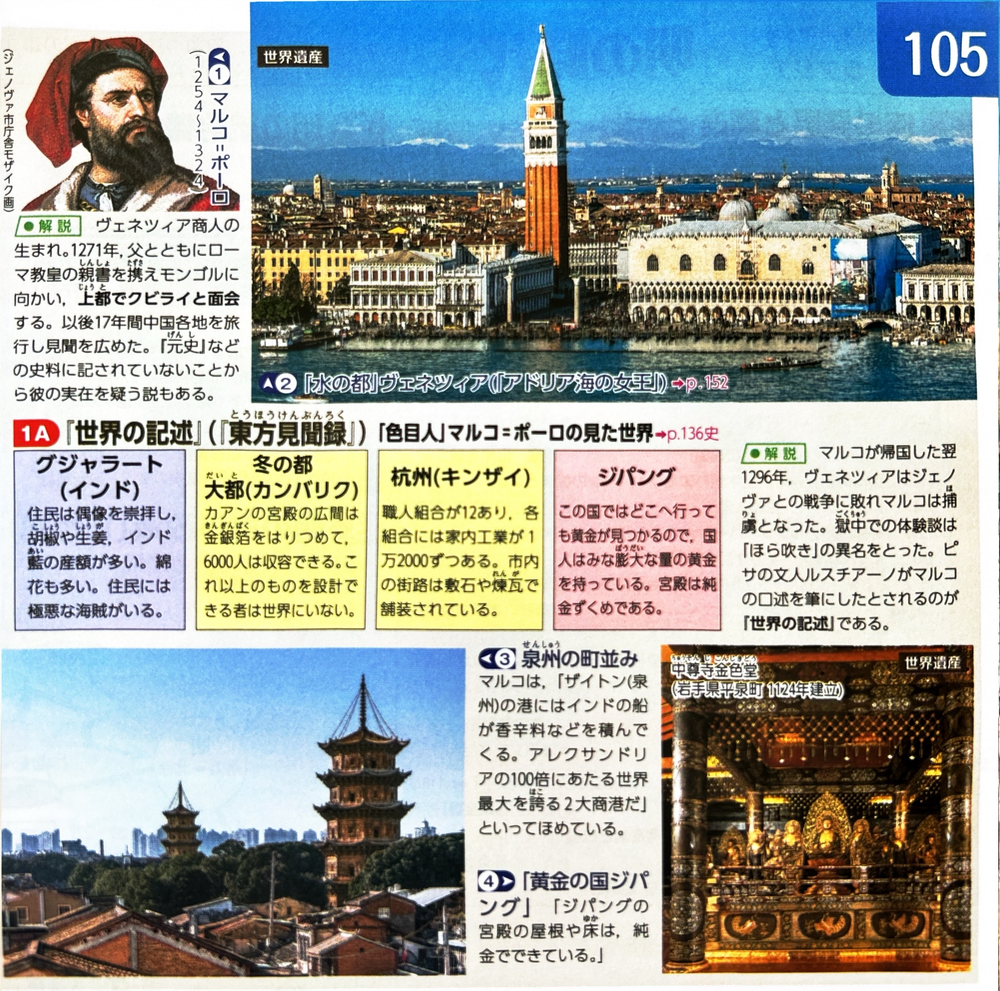
4. モンゴル帝国の解体（14世紀の危機）
14世紀に入ると、気候の寒冷化と疫病の流行が帝国を直撃しました。
- 黒死病（ペスト）の流行：モンゴルの交通ネットワークを通じて、ヨーロッパを含むユーラシア全域にペストが拡大し、大打撃を与えました。
- 元の滅亡：チベット仏教への過度な出費や、交鈔の乱発によるハイパーインフレで経済が破綻。各地で疫病や飢饉が広がる中、白蓮教徒を中心とする農民反乱である紅巾の乱（白蓮教徒の乱）が発生しました。
- 明の建国：紅巾の乱の中から頭角を現した朱元璋（しゅげんしょう）が1368年に「明」を建国しました。大都を奪われた元はモンゴル高原へ退き（北元）、中国におけるモンゴル支配は終わりました。
基礎問題（理解度チェック）
Q1. モンゴル帝国の征服活動について、空欄を埋めなさい。
チンギス＝カンは遊牧民を軍事組織として編成する
を組織し、トルコ系のイスラーム国家である
や中国北西部の西夏を滅ぼした。第2代オゴデイの時代には金を滅ぼし、バトゥがヨーロッパ遠征を行い
で勝利した。第5代の
は国号を元とし、都を大都に定めたのち、1279年に
を滅ぼして中国全土を統一した。
Q2. 諸ハン国と元の身分制度について、空欄を埋めなさい。
モンゴル帝国はのちに分裂し、バトゥが南ロシアに建てた
、フレグがイラン地方に建てた
などが成立した。元の中国統治においては、モンゴル人至上主義がとられ、特権階級のモンゴル人をサポートする財務官僚などとして、西方諸民族出身の
が重用された。一方、最も人口が多く最下層に置かれた旧南宋支配下の人々は
とよばれ、冷遇された。
Q3. ユーラシアの交通と文化について、空欄を埋めなさい。
モンゴル帝国全域には
という交通ネットワークが整備され、経済網として
とよばれる紙幣が広く流通した。文化面では、イスラーム天文学の影響を受けて郭守敬が精度の高い『
』を作成した。また、チベット仏教の僧
が国師に迎えられ、彼によってモンゴル語表記のための文字が制定された。
Q4. 東西交流において、ローマ教皇の使節プラノ＝カルピニやフランス王の使節ルブルックは、イスラーム勢力と対抗する同盟を求めてモンゴルの都カラコルムを訪れた。また、ヴェネツィアの商人マルコ＝ポーロは陸路で大都を訪れてフビライに仕え、その見聞を『世界の記述（東方見聞録）』として残した。